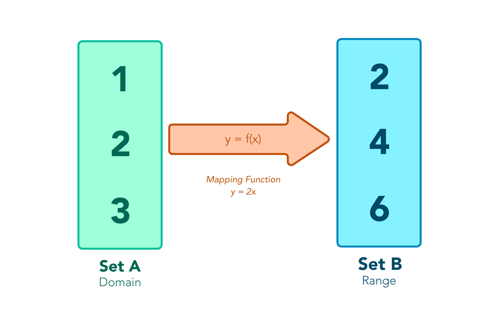

👩🏫 JS Intermédiaire 02 - Tableaux : méthodes fonctionnelles
⚠️ Avant de commencer cette quête, tu dois avoir terminé les quêtes suivantes :
Introduction
Dans cette quête, tu apprendras à utiliser les méthodes fonctionnelles sur les tableaux. Ces dernières sont très utilisées en javascript moderne, surtout dans des bibliothèques comme React.
🤓 À la fin de cette quête, tu sauras :
✅ Comment utiliser la méthode map pour transformer un tableau en un autre tableau
✅ Comment utiliser la méthode forEach pour itérer sur les éléments d'un tableau
✅ Comment utiliser la méthode filter pour filter un tableau
Map
Imagine un tableau de nombres pour lequel tu souhaiterais multiplier tous les éléments par 2, tout en gardant les nombres originaux. Pour le moment, tu sais le faire comme ceci :
const numbers = [1, 2, 5, 7];
const doubles = [];
for (let i = 0; i < numbers.length; i++) {
const currentNumber = numbers[i];
doubles.push(currentNumber * 2);
}
console.log(doubles); // [2, 4, 10, 14]
Ca fonctionne, mais le fait de devoir écrire une boucle for, faire évoluer un index et pousser manuellement les éléments dans un tableau est un peu lourd. Heureusement, il y a un meilleur moyen !

map est une méthode qu'on peut utiliser pour créer un nouveau tableau en allant transformer chaque élément grâce à une fonction de rappel (callback).
const numbers = [1, 2, 5, 7];
const doubles = numbers.map(function (currentNumber) {
return currentNumber * 2;
});
console.log(doubles); // [2, 4, 10, 14]
map retourne un nouveau tableau qui a exactement la même taille que le tableau original, mais où les éléments auront été transformés. La fonction de rappel donnée en argument de map est appelée avec chaque élément du tableau original l'un après l'autre et la valeur de retour de ce callback sera la valeur de l'élément dans le nouveau tableau.
🔬 Expérience
Ce CodeSandbox contient un tableau d'objets des animaux. Utilise map pour créer un nouveau tableau qui contient le nom de l'animal et l'espèce sous forme de phrase.
Utilise console.log pour afficher le résultat dans la console.
Le résultat devrait ressembler à cela :
["Hector the Beaver", "Edouard the Duck", "José the Boar", "Charlotte the Groundhog", "Mireille the Bee", "Leon the Hornet", "Fedor the Pig"]
https://codesandbox.io/s/ex-map-gjep3?file=/src/index.js
Montrer la solution|||javascript|||Problèmes pour trouver la solution ? |||0|||Cacher
const animals = [
{ name: "Hector", species: "Beaver" },
{ name: "Edouard", species: "Duck" },
{ name: "José", species: "Boar" },
{ name: "Charlotte", species: "Groundhog" },
{ name: "Mireille", species: "Bee" },
{ name: "Leon", species: "Hornet" },
{ name: "Fedor", species: "Pig" }
];
const sentences = animals.map(function (animal) {
return `${animal.name} the ${animal.species}`;
});
console.log(sentences);
Map avec fonction fléchée
Tu peux utiliser une fonction fléchée lorsque tu déclares ta fonction de rappel, voyons un exemple :
const numbers = [1, 56, 35, 23, 45];
const halfNumbers = numbers.map(number => number / 2);
console.log(halfNumbers);
🔬 Expérience
Prends le code précédent avec les animaux et convertis la fonction en une fonction fléchée.
Montrer la solution|||javascript|||Problèmes pour trouver la solution ? |||0|||Cacher
const animals = [
{ name: "Hector", species: "Beaver" },
{ name: "Edouard", species: "Duck" },
{ name: "José", species: "Boar" },
{ name: "Charlotte", species: "Groundhog" },
{ name: "Mireille", species: "Bee" },
{ name: "Leon", species: "Hornet" },
{ name: "Fedor", species: "Pig" }
];
const sentences = animals.map(animal => `${animal.name} the ${animal.species}`);
console.log(sentences);
Le paramètre index
Tu peux utiliser plusieurs paramètres donnés à la fonction de rappel. Le premier est l'élément en cours, le deuxième est l'index de l'élément dans le tableau original. L'index est similaire à l'index ou l'itérateur que nous utilisons avec une boucle for.
C'est un nombre qui augmentera à chaque itération de la boucle, en partant de zéro.
const animals = [
{ name: "Hector", species: "Beaver" },
{ name: "Edouard", species: "Duck" },
{ name: "José", species: "Boar" },
{ name: "Charlotte", species: "Groundhog" },
{ name: "Mireille", species: "Bee" },
{ name: "Leon", species: "Hornet" },
{ name: "Fedor", species: "Pig" }
];
const sentences = animals.map((animal, index) => `${animal.name} the ${animal.species}, the number ${index}`);
console.log(sentences);
/*
0: "Hector the Beaver, the number 0"
1: "Edouard the Duck, the number 1"
2: "José the Boar, the number 2"
3: "Charlotte the Groundhog, the number 3"
4: "Mireille the Bee, the number 4"
5: "Leon the Hornet, the number 5"
6: "Fedor the Pig, the number 6"
*/
ForEach
Map n'est pas la seule méthode que tu peux utiliser sur les tableaux, une autre méthode utile est forEach.
Comme son nom l'indique, forEach effectuera une action pour chaque élément du tableau.
const numbers = [1, 2, 5, 7];
numbers.forEach((num) => console.log(num * 2));
// 2
// 4
// 10
// 14
Mais attends... C'est quoi la différence avec map ?!
map va générer un nouveau tableau. forEach va juste faire une action pour chaque élément du tableau.
let sentences = animals.forEach(
(animal, index) => `${animal.name} the ${animal.species}, the number ${index}`
);
console.log(sentences); // undefined
Ici nous avons fait le même code que celui que nous avons utilisé pour map mais nous avons remplacé map par forEach.
🔬 Expérience
Utilise tes connaissances de la manipulation du DOM combinées avec la boucle forEach pour afficher une liste d'animaux emojis avec leur nom.
https://codesandbox.io/s/ex-foreach-139ol
Montrer la solution|||javascript|||Problèmes pour trouver la solution ? |||0|||Cacher
const animalList = document.querySelector(".animal-list");
animals.forEach((animal) => {
const newAnimal = document.createElement("li");
newAnimal.innerText = `${animal.emoji} - ${animal.name}`;
animalList.appendChild(newAnimal);
});
Filter
La méthode filter crée un nouveau tableau avec seulement les éléments qui vérifient une condition donnée.
Ex : Nous voulons un nouveau tableau avec seulement les nombres qui sont supérieurs à 5
const myArray = [3, 2, 40, 15, 20];
const greaterThanFive = myArray.filter(number => number > 5);
console.log(greaterThanFive);
// [40, 15, 20]
Si et seulement si la valeur de retour du callback est true, l'élément sera copié dans le nouveau tableau.
🔬 Expérience
Utilise la méthode filter pour créer un nouveau tableau avec uniquement des chats et utilise console.log pour afficher le résultat.
https://codesandbox.io/s/ex-filter-forked-eqish
Montrer la solution|||javascript|||Problèmes pour trouver la solution ? |||0|||Cacher
const onlyCats = animals.filter((animal) => animal.species === "Cat");
// Affiche un tableau avec uniquement des objets chat
console.log(onlyCats);
Ressources partagées sur cette quête
- Petite lecture rapide expliquant les différences entre map() et forEach() ! :)https://www.freecodecamp.org/news/4-main-differences-between-foreach-and-map/
- Visualisation claire, sous forme de vidéo, de la différence entre map et forEachhttps://www.youtube.com/watch?v=2trphUGce-8